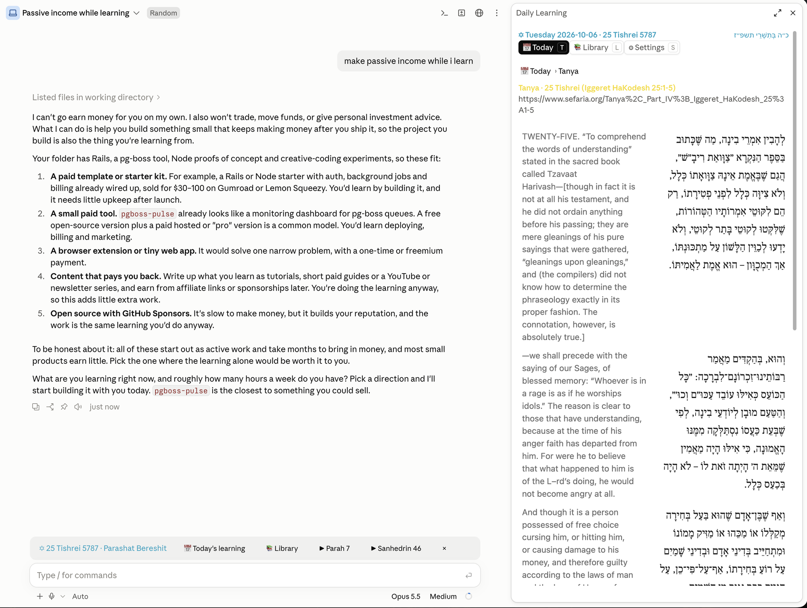

Today's Chitas, Rambam, Hayom Yom and Daf Yomi, and a Library of Mishnayos, Shas and Mishneh Torah to learn through at your own pace, in Hebrew that reads right, beside your Claude Code session.

Today's Tanya in the sidebar, Hebrew and English side by side, with the line above the prompt below.
One line above the prompt: the date, Today's learning, the Library, and ▶ where you left each collection. Each opens the sidebar there; × hides the line until tomorrow.
The day's aliyah, Rashi under each verse.
וַיַּפֵּל יְהֹוָה אֱלֹהִים תַּרְדֵּמָה עַל־הָאָדָם
מצלעותיו. מִסְּטָרָיו
Tehillim on the Chabad monthly cycle; the whole day's Tanya portion.
אַשְׁרֵי תְמִימֵי־דָרֶךְ
×1 and ×3, perek by perek, each halacha numbered.
א. הַחוֹפֵר בּוֹר בִּרְשׁוּת הָרַבִּים
Amud by amud, Rashi on each passage.
דף יח.
Whole works, at your own pace. Pick a collection, a seder or sefer, a masechta or hilchos, then a perek or daf. Continue picks up where you left each one, and next runs straight on into the next masechta.
63 masechtos, perek by perek.
משניות
The Bavli daf by daf, with Rashi.
ש״ס בבלי
14 sefarim, hilchos perek by perek.
משנה תורה
Right to left, nikkud in place, in Frank Ruhl or Shlomo. English off, under each paragraph, or side by side, all on the sidebar's Settings page.
א.הַחוֹפֵר בּוֹר בִּרְשׁוּת הָרַבִּים וְנָפַל לְתוֹכוֹ שׁוֹר אוֹ חֲמוֹר וּמֵת, אֲפִלּוּ הָיָה הַבּוֹר מָלֵא גִּזּוֹת שֶׁל צֶמֶר…
1. One who digs a pit in the public domain, and an ox or a donkey falls into it and dies…
Requires Claude Code 2.1.286 or later and python3. In a Claude Code session:
/plugin marketplace add sharshi/daily-learning-plugin /plugin install dl@daily-learning
Commands
| Command | What it does |
|---|---|
/dl | Open the sidebar |
/dl-toggle | Hide or show the line above the prompt |
/dl:text | Print the day's text in the conversation, to ask Claude about it |
In the sidebar
Terminals draw Hebrew differently, so the sidebar lays it out per terminal.
| Where | How it reads |
|---|---|
| Claude Desktop (Code tab) | Best. Each reading is drawn with the chosen Hebrew font built in, laid out by the app's own text engine. |
| Ghostty, and terminals without right-to-left support | Very good. The mod places every letter itself; the Hebrew font setting maps Ghostty's Hebrew to the bundled font. |
| macOS Terminal | Best effort. Terminal reorders Hebrew on its own; turning nikkud off in Settings gives the cleanest lines. |
Choose Frank Ruhl (the default) or Shlomo on the Settings page, or System to leave fonts alone.
Texts and the calendar from Sefaria, the Hebrew date from hebcal.com, with chabad.org daily study as a fallback. Fonts: Frank Ruhl Libre (The Frank Ruhl Libre Project Authors) and Shlomo (SIL International and Shlomo Orbach), both under the SIL Open Font License 1.1, via the Open Siddur font pack. The plugin's code is MIT licensed.